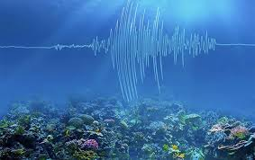

a magia dos oceanos
<> 1. O SOL DÁ AO OCEANO SUA TONALIDADE AZUL Box-kids-Club-Clube-de-Assinatura-Oceano-BaleiasUma das características2. OS OCEANOS MANTÊM A INTERNET ONLINE Box-kids-Club-Clube-de-Assinatura-Oceano-Cabos-MarinhosSe você pudesse avistar os quilômetros de cabos cruzando os oceanos do mundo, pareceria uma teia gigante submersa. As empresas de comunicação mantêm conexões internacionais, passando por superfícies planas no fundo do oceano. Alguns exigem camadas à prova de tubarões para evitar que predadores mordam e caia sua conexão com sites em outras partes do mundo. De acordo com o site TeleGeography.com, no início de 2018, eram aproximadamente 448 cabos submarinos em serviço em todo o mundo.
3. A PARTE MAIS PROFUNDA DO OCEANO É MUITO, MUITO PROFUNDA Box-kids-Club-Clube-de-Assinatura-Oceano-Fossa-MarianasA Fossa das Marianas é considerada a parte mais profunda dos oceanos do mundo – e o ponto mais profundo da Terra. Dentro da trincheira está um vale conhecido como Challenger Deep que se estende por cerca de 10.994 metros abaixo da superfície. Para efeito de comparação, todo o Monte Everest, a montanha mais alta do mundo com 8.848 metros, caberia facilmente lá. Até recentemente, as explorações tripuladas não tinham ido mais longe do que 10.910 metros abaixo da superfície, um recorde estabelecido por dois oceanógrafos em 1960. Em 2012, o cineasta James Cameron explorou aproximadamente as mesmas profundezas em uma missão em que foi sozinho . Em 2019, Victor Vescovo fez história ao ser a primeira pessoa a chegar ao fundo do oceano.
4. OS SONS PODEM VIAJAR PARA AS ÁREAS MAIS PROFUNDAS DO OCEANO Certa vez, os pesquisadores baixaram um microfone subaquático chamado hidrofone até quase o fundo da Fossa das Marianas para ver quais sons – se houver – ele poderia captar. Felizmente, a imensa pressão nessas profundidades – cerca de 11 toneladas por metro quadrado – não implodiu o equipamento, permitindo que os cientistas descobrissem o som de terremotos, baleias de barbatanas passando e outros ruídos ambientais eram audíveis.
5. EXISTEM LAGOS E RIOS ABAIXO DA SUPERFÍCIE DO OCEANO Algumas superfícies no oceano apresentam visões que não parecem fazer nenhum sentido lógico – rios e lagos, alguns deles com quilômetros de extensão, podem se estender pelo solo mesmo estando submersos. Como pode uma massa de água existir em uma massa de água? A água do fundo do mar infiltra-se e dissolve as camadas de sal, formando depressões. Como a água na depressão é mais densa do que a água ao seu redor, ela se acomoda na depressão e forma uma piscina distinta.
1. Mamãe lula carregando ovos perolados
(Fonte: MBARI)
Imagens extremamente raras de uma mamãe lula carregando um fio gelatinoso de ovos perolados brilhantes foram capturadas nas profundezas do oceano na costa da Califórnia. Os pesquisadores do Monterey Bay Aquarium Research Institute (MBARI), avistaram o animal — uma espécie desconhecida do gênero Bathyteuthis — com uma ROV (do inglês Remotely operated underwater vehicle, ou "veículo submarino operado remotamente") , a cerca de 90 quilômetros da costa, a uma profundidade de aproximadamente 1.390 metros. As mães lulas geralmente não carregam ou chocam os seus ovos. A maioria das fêmeas os libera no fundo do mar ou em grandes aglomerados gelatinosos. A incubação pode aumentar a chance da eclosão de ovos, mas também aumenta o risco de predação para a mãe, e é por isso que o caso é tão raro. A mãe superprotetora pode parecer grande na imagem em comparação com seus ovos, mas, na realidade, o seu manto — a parte principal do corpo de uma lula — só pode crescer até um comprimento máximo de 7,5 centímetros.
2. Alien "saco de compras"
Uma bizarra criatura, semelhante a um saco plástico flutuante com órgãos brilhantes de Cheetos, foi visto nas profundezas do oceano perto do Havaí. Os pesquisadores da Nautilus Live avistaram a criatura à deriva em uma profundidade de 2.201 metros no Monumento Nacional Marinho — a maior área marinha protegida do mundo — à sudoeste de Honolulu. O animal é, na verdade, um pepino-do-mar da família Elpidiidae, que limpa pedaços de detritos orgânicos, também conhecidos como neve marinha, que caem no fundo do mar. A criatura transparente possui um apêndice em forma de barbatana, que o ajuda a nadar distâncias curtas no fundo do mar. Era isso, inclusive, que o bichinho estava fazendo quando os pesquisadores o avistaram. Os tubos laranjas brilhantes dentro do animal são os seus intestinos, mas ainda não se sabe por que eles são tão coloridos.
3. Espaguete luminoso
Um animal bem esquisito, coberto por tentáculos laranjas luminosos semelhantes a espaguetes, foi visto pelos pesquisadores do MBARI e causou um alvoroço na internet. O chamado verme brilhoso, do gênero Biremis, foi encontrado no Golfo da Califórnia, na costa do México. O verme, que imita um macarrão, não tem olhos, nem guelras, e usa os seus tentáculos coloridos para pegar os minúsculos pedaços de neve marinha que caem no fundo do mar, igual ao nosso amigo do item cima. A maioria dos vermes de espaguete vive em tocas ou túneis abaixo do fundo do mar, e apenas enfia seus tentáculos na água para pegar pedaços de comida. Entretanto, o animal passa a sua vida acima do fundo do oceano e já foi visto nadando na água para encontrar locais onde a comida é abundante.
A navegação na pré-história
A pré-história, um período que antecede os registros escritos, nos dá pistas fascinantes sobre as primeiras iniciativas humanas em relação ao mar. Longe de serem meros habitantes terrestres, nossos antigos ancestrais mostraram uma capacidade notável de explorar e viajar pelos cursos d'água, o que eventualmente os conduziu através de mares e oceanos.
Os primeiros relatos escritos e orais sobre navegações

A história da navegação é quase tão antiga quanto a própria humanidade. Enquanto os primeiros esforços de navegação eram motivados pela necessidade de explorar, colonizar ou comercializar, a importância dessas jornadas marítimas não se limitava a suas razões práticas. Elas eram frequentemente registradas, celebradas e transmitidas por meio de relatos orais e escritos, tornando-se lendas e mitos fundamentais para muitas culturas.
Lendas e vestígios de civilizações perdidas no oceano
Lendas e vestígios de civilizações perdidas no oceano têm sido uma fonte perene de mistério e fascínio ao longo da história. Muitas dessas histórias são cercadas por mitos e lendas, e algumas foram posteriormente confirmadas por descobertas arqueológicas.